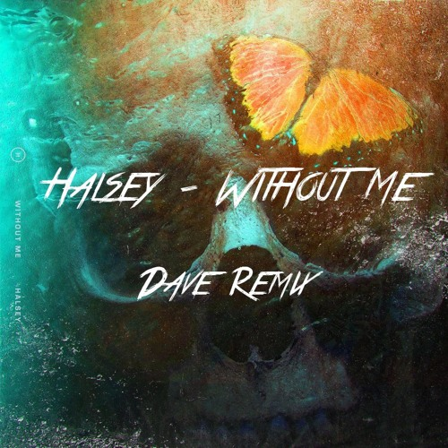

[Verse 1]
Found you when your heart was broke
I filled your cup until it overflowed
Took it so far to keep you close (Keep you close)
I was afraid to leave you on your own
[Pre-Chorus]
I said I'd catch you if you fall (Fall)
And if they laugh, then fuck 'em all (All)
And then I got you off your knees
Put you right back on your feet
Just so you could take advantage of me
[Chorus]
Tell me, how's it feel sittin' up there?
Feelin' so high, but too far away to hold me
You know I'm the one who put you up there
Name in the sky, does it ever get lonely?
Thinking you could live without me
Thinking you could live without me
Baby, I'm the one who put you up there
I don't know why (Yeah, I don't know why)
Thinking you could live without me
Live without me
Baby, I'm the one who put you up there
I don't know why (I don't know why, yeah, yeah)
[Verse 2]
Gave love 'bout a hundred tries (Hundred tries)
Just running from the demons in your mind
Then I took yours and made 'em mine (Mine)
I didn't notice 'cause my love was blind
[Pre-Chorus]
Said I'd catch you if you fall (Fall)
And if they laugh, then fuck 'em all (All)
And then I got you off your knees
Put you right back on your feet
Just so you could take advantage of me
[Chorus]
Tell me, how's it feel sittin' up there?
Feelin' so high but too far away to hold me
You know I'm the one who put you up there
Name in the sky, does it ever get lonely?
Thinking you could live without me
Thinking you could live without me
Baby, I'm the one who put you up there
I don't know why (Yeah, I don't know why)
Thinking you could live without me
Live without me
Baby, I'm the one who put you up there
I don't know why, yeah
[Bridge]
You don't have to say just what you did (What you did)
I already know (I know)
I had to go and find out from them (Oh-woah)
So tell me, how's it feel? (Oh-woah)
[Chorus]
Tell me, how's it feel sittin' up there?
Feelin' so high, but too far away to hold me
You know I'm the one who put you up there
Name in the sky, does it ever get lonely?
Thinking you could live without me
Thinking you could live without me
Baby, I'm the one who put you up there
I don't know why (Yeah, I don't know why)

Halsey
Without Me